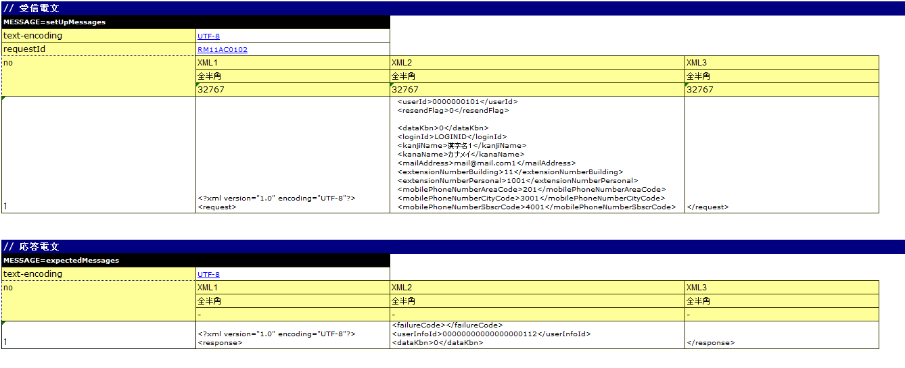

3.1.16. How to Execute a Request Unit Test (HTTP Receiving Synchronous Message Process)¶
Refer to How to Execute a Request Unit Test (Receiving Synchronous Message Process) for details on how to perform a request unit test.
In this section, the differences in the description method with How to Execute a Request Unit Test (Receiving Synchronous Message Process) are explained.
3.1.16.1. How to write test data¶
3.1.16.1.1. Test shot List¶
The test shot table for one test method is described in the data type of LIST_MAP. The ID is testShots.
The specific content of the HTTP receiving synchronous message process is described below.
| Column name | Description | Required |
|---|---|---|
| diConfig | Describes the path to the component configuration file for the HTTP receiving synchronous
message request unit test.
(Example: http-messaging-test-component-configuration.xml). |
Required |
| expectedStatusCode | Leave this field blank when using JSON or XML data format. | Required |
| requestPath | The part of the URL to execute the action without the host name.
For example, if URL of the action execution is “http://127.0.0.1/msgaction/ss11AC/RM11AC0102”, it will be “/msgaction/ss11AC/RM11AC0102”. |
Required |
| userId | User IDs used for authentication and permission checks | Required |
Tip
When JSON and XML data formats are used, the status code is also compared with the message body of an Excel file. This is because the framework control header is also included in the message body.
3.1.16.1.2. Various preparation data¶
This section explains how to describe the various preparation data required for testing. The database and request message are prepared in batches.
3.1.16.1.2.1. Request message¶
The request statement that is the input data for the test is described. An example is shown below.
MESSAGE=setUpMessages
// Common information (directives, framework control headers)
text-encoding Windows-31J requestId RM11AC0102 // Message body
[XML]
no XML1 XML2 XML3 全半角 全半角 全半角 32767 32767 32767 1 <?xml version=”1.0” encoding=”UTF-8”?>
<request><userId>0000000101</userId>
<resendFlag>0</resendFlag>
<dataKbn>0</dataKbn></request>
[JSON]
no JSON 全半角 32767 1 {
“userId” : “0000000101”,
“resendFlag” : “0”,
“dataKbn” : “0”,}
- First line
Prepare a request message for the request to be tested. The name should be fixed toMESSAGE=setUpMessages.
- Common information
Enter the following information in the next line after the name. These values are common to all request messages.
- Directive
- Framework control header
The format is in key-value format.
Key Value
Important
If the item of the framework control header is changed by project,
it is necessary to specify the framework control header name with the key reader.fwHeaderfields in the properties file as follows.
# Specify the framework control header name separated by a comma.
reader.fwHeaderfields=requestId,addHeader
- Message body
Describe the messages after the framework control header.
Line Description content Remarks First line Field name First cell is set to “no”. Second line Data type First cell is blank Third line Field length First cell is blank From fourth line XML data
and
JSON dataThe first cell can be written across
the numbered fields starting with 1.
Tip
When using JSON or XML data format, only one test case should be written in one Excel sheet.
This is due to the limitation of NTF, which expects the string length of each Excel line to be the same for the message body. In JSON and XML data formats, the request message length is generally different for each request, so only one test case can be described in practice.
Important
Duplicate names are not allowed for field names. For example, there should be not more than 1 field named as “Name”. (Usually, in such cases, a unique field name is assigned, such as “member name” and “family member name”)
3.1.16.1.3. Various expected values¶
3.1.16.1.3.1. Response message¶
Same as Request message.
However, the name is MESSAGE=expectedMessages.
The field length of the response message is configured to “-” (hyphen).
